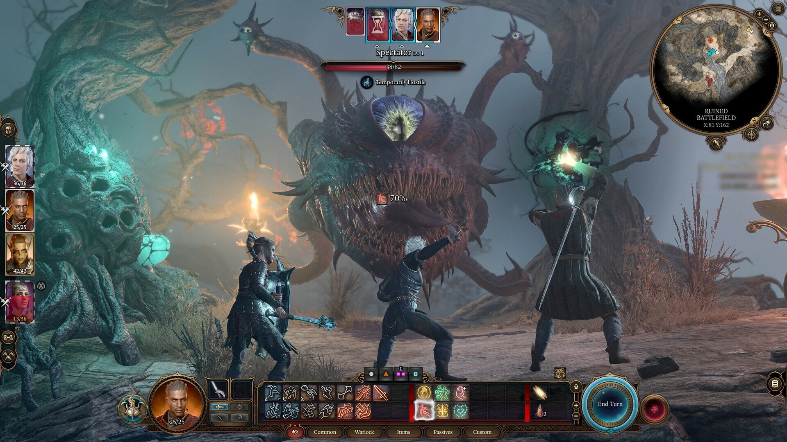
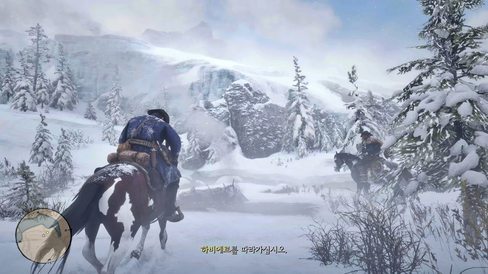
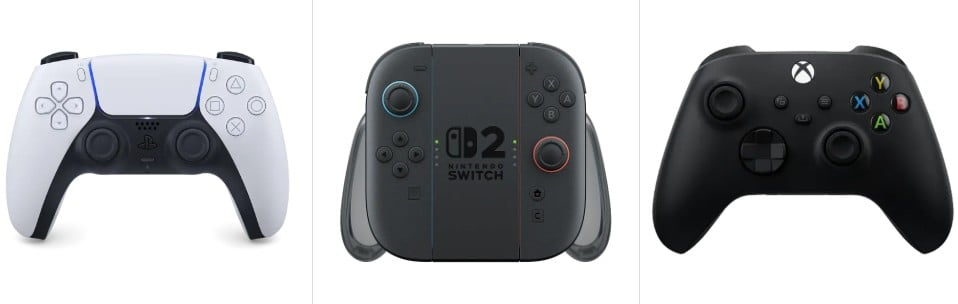

턴제 극혐
실시간 전투가 아닌 턴제로 한턴 한턴 머리 굴리는 걸 적응못하는 부류
발더스게이트3를 가져다줘도 적응 못함

초반 스토리 극혐
초기 튜토리얼+스토리 빌드업으로 늘어지는 구간을 극혐하는 부류
특히나 오픈월드 게임에 자유도를 제한하는 초반을 버티지 못하는 사람이 있으며 일부는 폴아웃4 초반 볼트구간도 못 버티는 사람도 있다고 함

패드 극혐
호기롭게 콘솔게임기 샀다가 패드 적응못해서 팔아버리는 사람들
특히 키보드마우스보다 어려움이 큰 FPS, TPS 에서 많이 느낌
하지만 적응하면 패드의 편리함에 더 선호하기도
내가 머리가 나쁜건진 몰라도 솔직히 튜토리얼 파트에서 일일히 도움말 패이지 뜨고 하는걸 못참겠음
어차피 직접 하면서 알아내고 정 모르겠다 싶으면 그때가서 읽어도 문제없거든
안그래도 초반에 질질 늘어지는거 너무 지루한데 게임 시스템 다 알려주겠다고 꾸역꾸역 되도않는 챕터 넣는게 ㄹㅇ 숨막힘
레데리2 초반이 딱 그런 느낌이었음…